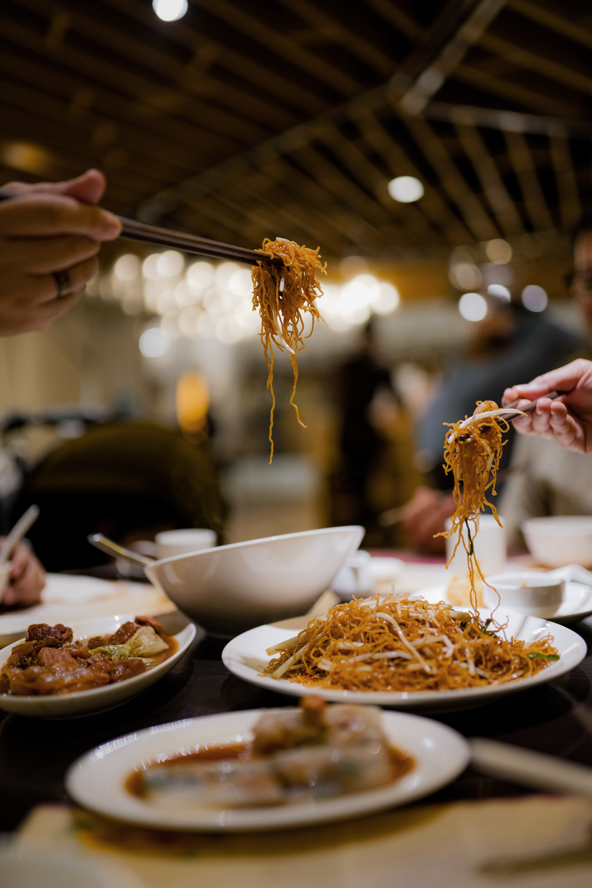

{{ h4 }}
Upper State Street has a wide variety of different restaurants at different locations to explore! It is known to be around plenty of different shopping centers and has great views of Santa Barbara. There are many hole-in-the-wall restaurants that provide visitors a different experience from the rest of the area. With that being said, there are definitely plenty of upper scale restaurants to provide tourists with plenty of options to choose from!

Lure Fish House
Lure Fish House is located in a shopping plaza right in the middle of Upper State Street. Their beautiful venue provides a wonderful experience for customers to dine either inside or outside. With plenty of options to choose from the menu, their cocktail menu has some of the tastiest drinks in the area! One of their most famous dishes to try is their lobster ravioli.

Mandarin Palace
Mandarin Palace has been around a long time for a great reason. Their authentic Chinese food takes many of the customers back to their traditional roots. Their are plenty of rice dishes that compliment well with the choice of protein. There are very few Chinese restaurants in Santa Barbara, but this definitely takes the top spot.

Kyoto Sushi Santa Barbara
Kyoto Sushi provides customers with a unique experience to dine in one of their tatami rooms! These rooms require guests to take off their shoes and experience Japan from many centuries ago. Their menu provides plenty of different menu items such as their sashimi or even their cooked barbecue rice dishes. There are plenty of appetizers for guests to enjoy with some sake.